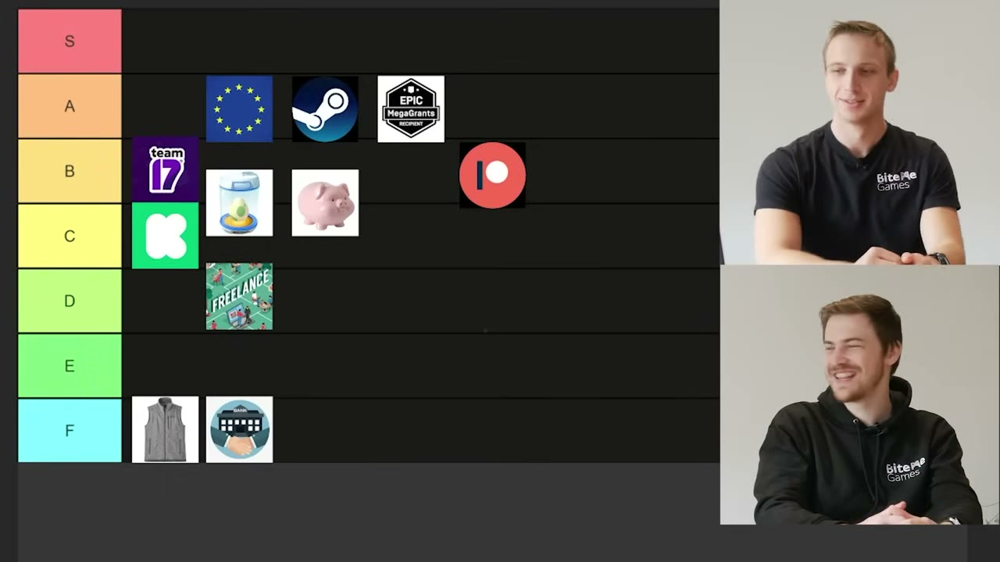

Start here
The overview
BiteMe Games ranks eleven funding routes for a small indie studio, from crowdfunding and publishers to savings, grants, existing-game income, and freelance work. The presenters favor favorable grant terms and income from finished games, while treating debt and venture backing as poor matches for their own goals. Their reasoning is more useful than a universal tier letter: every route exchanges something—time, ownership, autonomy, previous work, or personal financial exposure—for room to keep developing. This reading preserves their examples and qualifications, with funding-program details framed as their 2023 account.
What the snapshots add
- The final on-screen board resolves tentative spoken rankings and shows that incubators and personal savings are placed between B and C. Most other inspected frames contain the presenters rather than additional documentary evidence.
What to take away
- The headline amount is only part of the deal
Recoupable services, equity, fulfillment, and ongoing community work can substantially change what a funding source actually contributes.
- Timing can determine whether good terms help
A grant that arrives after months of administration or reimburses spending later may not solve a short project’s immediate cash needs.
- Different routes require different assets first
A back catalogue, an audience, professional client skills, and personal savings are valuable prerequisites that cannot simply be assumed.
- Compare the downside as well as the runway
Selling company equity, recouping a publisher advance, spending savings, and borrowing do not create the same obligations when a game fails.
Crowdfunding: a campaign needs an audience before it needs a funding page
BiteMe Games approaches funding as the practical problem of paying for life while building a game. The presenters compare routes they have used, investigated, or heard about from other developers. Their tier list is an opinionated discussion aimed mainly at people considering a full-time indie studio, not a financial model showing that one route always wins. They begin with crowdfunding because its appealing promise can hide substantial work.
The basic proposition is familiar: present a game idea or prototype and ask backers to fund it through a campaign. Their central objection is that the platform will not necessarily provide the audience. One presenter recalls a rough estimate that only about 20% of backers arrive organically through Kickstarter and the remaining 80% must be brought by the campaign. He does not substantiate that figure in the video; the argument is that a funding page should not be mistaken for an audience-acquisition plan.
Rewards can create a second business inside the first. Posters, prints, and figurines have production and fulfillment costs, and worldwide shipping adds administration, time, and country-specific complications. They know of developers whose reward pricing failed to cover the goods and associated obligations. Raising money can leave less usable development funding than the headline total suggests.
The campaign itself needs continuing updates, trailers, community engagement, and supporters willing to tell other people about it. It is not something a developer posts once and then ignores. The presenters see this as particularly difficult for someone making a first game without a following.
They still recognize benefits: successful backing can demonstrate interest, create a core audience, and generate publicity. A team whose publisher suddenly withdraws might already possess the community needed for a replacement campaign. They also contrast crowdfunding with taking on a bank loan, while not establishing that failed campaigns carry no obligations. Their spoken C-versus-D debate ends with the Kickstarter icon in C on the final board: possible and sometimes useful, but unattractive as the default starting point for an unknown beginner.
Publishers: evaluate the services and recoupment, not just the advance
The presenters argue against treating a publishing deal as free money or proof that a game is now destined to succeed. Their example is an advance that helps fund production, followed by revenue used to recoup agreed costs and a continuing publisher share. They use bank-like language to emphasize the cost of capital, but also acknowledge that a publisher may bear the commercial loss if a game fails. Revenue recoupment and personal debt are not automatically the same arrangement; the actual agreement matters.
A good publisher can provide production support, marketing knowledge, contacts, extra people, and access to markets the developer does not understand. The presenters have self-published and say their channel and other income give them unusual flexibility to avoid a publisher. That situation is part of the perspective behind their criticism, not a resource every viewer can assume.
Their negative examples concern both unfavorable terms and mismatched services. They describe approaches with very large publisher shares during recoupment, followed by a smaller but continuing share afterward. They also mention producer turnover, which can weaken the continuity of advice and relationships across a long project. These are examples they report, rather than a standard contract applying to every publisher.
A larger nominal budget may also contain spending the studio would not choose itself. One anecdote concerns a Belgian developer assigned €10,000 for Chinese localization of a text-heavy game despite the team's doubts about its value. Another example is an expensive convention presence that the developer may still have to recoup. More money routed through the project is not automatically more useful runway for the team.
They are especially frustrated by interested publishers asking developers to return later. Their interpretation is that some of these publishers want stronger evidence of market demand—playtests, community response, and validation—rather than merely a more polished idea. Waiting shifts more development risk and expense onto the studio. Their account does not establish the motive behind every delayed decision, but it explains why polite interest is not the same as committed funding.
Despite the criticism, they place publishers in B. The important question for them is whether the actual package of funding, expertise, reach, control, and cost is a useful exchange for this studio. A publisher can be valuable without being a universal rescue plan.
Incubators: early support is exchanged for a lasting stake in the studio
An incubator, as described here, supplies some combination of workspace, training, administration, contacts, and startup money in exchange for equity. Unlike a deal focused on one game, the stake concerns the company and therefore potentially its later projects as well. The presenters think this can help developers who want to concentrate on making games and need help with the surrounding business.
Their Belgian example is roughly €25,000–€50,000 in startup support for around 10% equity, with the lower amount described as more typical in their experience. They ask whether the immediate benefit justifies the long-term ownership trade. The figures are illustrative historical examples from the conversation, not a current offer or a general valuation rule.
The cash can also disappear faster than a new founder expects. Paying oneself and one additional person, before considering office costs, can turn an apparently large sum into only a short runway. Funding an artist may fill a critical skill gap, but it does not necessarily pay for the whole production. A team can finish the initial support period still needing another source of money.
BiteMe chose to handle much of this internally because its four-person team already had some finance and business capability and was working remotely. They also discuss a full-time participation requirement that would have conflicted with their own part-time start. That is a condition of the kind of program they considered, not a claim that every incubator everywhere requires someone to quit another job.
The discussion settles around B minus, and the final icon sits across the B/C boundary. They see a real early boost from services and networks, but worry about giving away company equity for help the team may eventually outgrow. The fit depends partly on whether those services solve problems the founders cannot already handle.
Government grants: favorable terms can still come with expensive delays
The presenters are positive about public funding while drawing on a frustrating application experience. They distinguish three programs they investigated: a Flemish audiovisual/game fund, Flanders Investment & Trade support, and Creative Europe. Their descriptions reflect the rules and their understanding in 2023; the video does not supply a current application guide.
They describe the audiovisual fund as supporting amounts from around €25,000 up to a much larger overall ceiling, with repayment arrangements that can place the fund behind other claims on a successful game's income. They contrast that with an approximately €9,000 export-related award that they say did not need repayment if its conditions were met. The useful distinction is between different structures and eligible uses, rather than treating all grants as interchangeable cash.
Their account of Creative Europe emphasizes a different cash-flow problem: reimbursement can arrive after the team has already financed and undertaken the work. They discuss narrative-game eligibility and a possible contribution toward development costs, but also admit uncertainty about some details. A reimbursement opportunity is not necessarily a solution to having no money at the start.
The strongest practical example is their own €25,000 prototype application. One presenter says he spent about two weeks writing the scope, mechanics, budget, schedule, and estimates for activities such as art and interface work. They then waited four months before a short jury discussion and were rejected, in their account because the team did not have an artist.
During that wait, the studio released Forge Industry, supported it after launch, attended conventions, and gained much of its channel audience. The comparison shows how far a small team can move while a funding application remains unresolved. A slow decision can make an otherwise attractive program a poor match for a six-to-twelve-month project, while a longer production may have more room to accommodate it.
Application windows are another constraint. The presenters recall limited annual calls and, in one case, a very short submission period. Those remembered schedules should not be used as current deadlines. Their broader point is that the team must account for the paperwork, eligibility, decision time, payment timing, and conditions as well as the amount advertised.
They assign public grants A when the location, program, and studio schedule align. Their enthusiasm comes from comparatively favorable terms and support for work that may otherwise be difficult to fund. The ranking does not mean approval is likely, that the paperwork is free in terms of labor, or that every country offers comparable support.
Venture capital: their strongest objection is a mismatch of studio goals
The presenters describe venture capital as selling a share of the company in a funding round, using an example of 20% for an investment of 200,000 (the currency is not specified in the captions). They compare it with an incubator that can provide more money but may not supply the same package of practical startup services. In their account, investors are usually funding the studio and its longer-term commercial prospects rather than simply paying to complete one small game.
They mention a Belgian studio that also rents motion-capture facilities as an example of the wider business activities an investment-backed company might pursue. The point is that the resulting company can have goals beyond the founders' next creative project. They worry about pressure, loss of freedom, and expectations that do not match the small independent studio they want to run.
They place venture capital in F, but later acknowledge that they have not actually financed their own studio through it. This is therefore one of the less directly experienced judgments in the video. Their later comparison with bank loans also recognizes an important difference: selling equity is not automatically the same as taking on personally secured debt. Their shared low ranking should not erase that distinction.
Previous-game income: a useful recurring stream with an expensive entry requirement
Once a game is released, it can continue to sell while its developers work on something else. The presenters call this Steam residuals and see it as one of the strongest sources of supplementary funding. The core product already exists, and a new sale does not require repeating its entire development process.
They nevertheless qualify the idea of passive income. Updates, postlaunch support, further marketing, and improvements to the store page may affect how much money continues to arrive. They describe the revenue as something that may supplement development rather than necessarily cover a whole salary or studio budget. Their reference to a storefront percentage belongs to the discussion's period and is not a complete account of every deduction from a sale.
A back catalogue can combine several modest streams. They recall a talk about a developer whose many small games eventually produced a substantial aggregate income, and illustrate the idea with games contributing a few hundred per month each. The example is not a promise that releasing more games will reliably generate those sums. It explains why they value finished, sellable work over an indefinitely unfinished first project.
The obvious barrier is that the first game had to be funded already. This route is much more available to someone with a released catalogue than to someone starting from zero. They suggest getting an initial release out while another job still pays the bills. After debating S, they choose A because of the substantial prerequisite. The final board confirms that placement.
Savings: clear runway and creative control, with the downside carried personally
One presenter says he quit his job after building savings and is still drawing on them while the studio's revenue grows. This offers a clear planning advantage: he knows the available amount and his approximate monthly spending, so he can estimate how long he can continue. There is no new publisher or investor deciding what the game must be.
That freedom is attractive for a project whose value depends on creative control. It can also reduce the immediate pressure to spend time pitching other funders. But the presenters repeatedly return to how hard it is to accumulate the savings in the first place. Their examples favor people with an established previous career and manageable living costs, rather than assuming a new graduate has substantial spare capital.
The downside is illustrated with a hypothetical 50,000 savings budget (currency unspecified) spent over about eighteen months, followed by a failed launch. The person may have gained experience and made a game, but the cash buffer is gone. The presenters therefore stress the importance of a fallback, such as returning to paid work, rather than treating savings as risk-free merely because no lender is involved.
They settle around B minus, and the piggy-bank icon crosses the B/C boundary on the completed board. For someone who can afford the exposure, self-funding can fit better than a publisher. That does not make it equally accessible or sensible for every household. Their comparison concerns the balance between autonomy and personally absorbing the loss.
Bank loans: the obligation can outlast the game
The presenters put bank loans in F. Their first concern is access: they doubt an inexperienced developer can easily borrow on the strength of an unproven game. Their larger objection is what happens if the game fails. Losing a savings budget leaves a smaller financial buffer; a loan can leave an outstanding repayment obligation after the project has stopped generating hope or income.
They use the possibility of losing a home as a vivid example of the stakes. Whether personal assets are exposed depends on the borrower, guarantees, security, and agreement; the video does not establish that every business loan creates the same liability. The point of the segment is the presenters' unwillingness to accept that kind of downside for speculative indie development.
Their joke that venture capital cannot simply come for a house also underlines why the funding structures should not be collapsed together. Both categories receive F in this particular ranking, but an equity stake and a debt claim create different obligations. The tier letter alone is not enough to describe the risk.
Other grants and competitions: valuable additions when the opportunity fits
The discussion then returns to grants outside government programs, with Epic MegaGrants as its principal example. The presenters say they know developers whose careers were helped by such support and contrast it with surrendering company equity to an incubator. Their enthusiasm is for a useful contribution that can leave the team in control of its business.
They mention a €25,000-style example, but do not provide a current schedule of award sizes, program rules, or engine eligibility. The conversation also includes a pointed appeal for Unity to offer comparable support during the controversy surrounding that company in 2023. Those remarks explain the context and sentiment of the recording, rather than describing today's engine-funding landscape.
Competitions and some game jams can likewise supply prize money and visibility. The presenters think of these as an extension to runway and a signal that someone outside the team sees merit in the work. A favorable jury response can be encouraging without establishing that a full market will buy the game.
They put this category in A when funding can actually be obtained. The qualification matters: an attractive award is a possible supplement, not a dependable salary before a decision exists. Their argument is to recognize the opportunity and its benefits, rather than build a budget that assumes a competition has already been won.
Community funding: recurring support also creates recurring work
Community-funded development differs from a single deadline-driven campaign. Supporters contribute repeatedly through platforms such as Patreon or Ko-fi, perhaps in exchange for progress updates, early builds, closer contact, or other benefits. The presenters compare this with a continuing crowdfunding effort, but emphasize that the operating rhythm is different.
The prerequisite remains an audience. A developer must offer a reason for people to keep following and contributing, and that can require videos, tutorials, updates, community management, or personal visibility. For a solo creator, producing that material can compete directly with making the game. An attractive recurring revenue line on a spreadsheet represents continuing relationship work, not just another payment button.
The community can contribute more than money. People who believe in a project may join playtests, give useful feedback, and enjoy taking part in its creation. The presenters value the difference between supporters voluntarily contributing through enthusiasm and testing arranged solely as a paid service, while not claiming that either replaces every form of quality assurance.
They have only recently launched their own Patreon and openly promote it during the discussion. They describe considering it once their channel had developed a substantial audience, not beginning with the assumption that an unknown first game could immediately be supported this way. Their own interest in recurring income is part of the context for the ranking.
In comparing it with Kickstarter, they argue that recurring updates can be simpler and less polished: a screen recording describing a new feature may be enough to give an interested supporter something useful. A timed campaign may require a concentrated period of higher-production-value promotion and can miss its goal entirely. Recurring support can instead grow gradually, fluctuate, and still provide some benefit at a small scale. The presenters' aside about keeping failed Kickstarter proceeds is uncertain and should not be read as platform policy.
They choose B, above one-time crowdfunding in C. The difference is not that ongoing support requires no work, but that its lower-intensity cadence and longer growth period can fit an existing community. They explicitly warn against assuming the route is suitable for everyone or announcing community funding before a community has actually developed.
Freelancing: paid development time competes with progress on the studio’s own game
Work for hire lets a developer fund an original project by doing paid work for another studio. The presenters describe a familiar weekly split: two or three days on client work and the remaining days on the team's own game. It can keep someone working in the industry and bring in money without requiring a successful original release first.
Their concern is that the output lost is greater than the simple percentage of hours redirected. Switching between games drains attention, creates different priorities, and can leave little energy for the independent project. One cannot assume that retaining 60% of the week automatically retains 60% of creative progress.
They prefer an example in which a Belgian developer works for clients for roughly six months and then uses that income to fund a sustained period on his own game. The alternating blocks still mean fewer calendar months on the original work, but reduce the repeated switching and give each activity a clearer stretch of momentum. This is an approach they admire, not proof that six-month contracts or matching income are available to everyone.
Finding the clients is itself work. The presenters discuss competition from experienced people affected by layoffs in the period of the recording and the difficulty of being hired without a portfolio, relevant experience, or contacts. A person trying to enter game development from an unrelated career may not yet have the professional credibility needed to sell part-time services to studios.
They assign D. They acknowledge that the route can work for particular people, but dislike how much it delays the independent game and how much effort can go into securing paid tasks. For their intended audience, they often prefer retaining another career and accumulating a buffer before the switch. The ranking reflects their priority of progressing their own games, not a claim that freelance work has no professional value.
Read the final ranking alongside the studio and household behind it
The final board provides a useful check on the conversational decisions. Public grants, Steam residuals, and Epic-style other grants occupy A. Publishers and Patreon-style recurring support occupy B. Incubators and savings sit across the B/C boundary, matching the spoken B-minus descriptions. Kickstarter is C, freelance work is D, and venture capital and bank loans are F. Nothing ends in S or E.
The presenters close by acknowledging an omitted route: keeping a full-time career and developing a game on the side. They leave it largely outside the list because they intended to discuss moving toward a full-time indie studio. That omission is important. The ranking does not compare every possible way to make a game, and it should not be interpreted as a case against hobby or part-time development.
Their judgments also reflect the kind of company they want. They favor autonomy, have some business knowledge already, have released a game, and have a channel that can support community-based income. A founder without those resources, or one pursuing a larger investment-backed studio, is evaluating a different situation. They admit that their venture-capital assessment is less directly experienced and invite other perspectives.
Household circumstances matter too: rent, dependents, existing employment, available savings, and tolerance for losing income can change how the same offer feels. The useful product of the tier list is therefore the set of tradeoffs behind its letters. Where does cash arrive, what work or ownership is exchanged, how long must the team wait, and who carries the downside if the game does not earn enough? The presenters' answer for BiteMe is not automatically the answer for another studio.


Source & limitations
This is an editorial synthesis of Ultimate gamedev funding tierlist, published by BiteMe Games. Timestamp links open YouTube at the corresponding section.
- Based on the complete English automatic captions and 12 inspected snapshots at category discussions and the final overview. Some snapshots show an incomplete board or no board; the final 37:28 frame is the source for the completed ranking. No continuous visual review was performed.
- This is a synthesis of the presenters' historical opinions and reported experiences, not independent financial or legal guidance. Specific grant amounts, eligibility, application schedules, repayment terms, platform rules, and labor-market claims were not verified against current programs or contracts.
- Caption errors affect some names, money discussions, and tentative tier letters. Unclear program details are not silently converted into authoritative instructions. The article distinguishes examples and anecdotes from rules applying to every funding arrangement.
- The presenters disclose limited direct experience with venture-capital financing, promote their own recently launched Patreon, and have a channel and business background that affect their preferred options. The list is aimed chiefly at full-time indie development rather than every kind of game-making arrangement.
Inspected snapshots (12)
Selected stills, not continuous video review. Observations below describe the inspected frames.
4:20 ↗
- Both presenters are seated at a table. A small tier board is visible with S through F rows and category icons still below the board; no completed ranking is established at this instant.
10:20 ↗
- The small tier board shows the Kickstarter icon in C; the publisher icon remains below the board at this instant.
14:10 ↗
- Both presenters are talking at the table; no ranking board or substantive slide is visible.
20:10 ↗
- Both presenters are talking at the table; no grant rules, figures, or ranking board are visible.
21:40 ↗
- The small board shows the EU-style public-grants icon in A, the publisher icon in B, Kickstarter in C, and the incubator icon crossing the B/C boundary. Venture-capital placement is not yet shown.
23:50 ↗
- The small board includes the vest icon for venture capital in F; the Steam icon remains below the board before its final placement.
26:00 ↗
- The board now shows Steam beside the public-grants icon in A. The savings pig icon has not yet been placed.
27:10 ↗
- Both presenters are talking at the table; the bank-loan decision is not displayed in this frame.
29:35 ↗
- Both presenters are talking at the table; no detailed grant conditions or ranking board are visible.
33:45 ↗
- Both presenters are talking at the table; no completed community-funding placement is visible.
37:00 ↗
- Both presenters are talking at the table; the freelance decision is not displayed in this frame.
37:28 ↗
- Final board: A contains public grants, Steam residuals, and Epic-style other grants; B contains publishers and Patreon-style community funding; incubator and savings icons cross the B/C boundary; C contains Kickstarter; D contains freelance work; F contains venture capital and bank loans. S and E are empty.
Read the timestamped source captions
en-orig · automatic captions. Caption errors and non-speech labels are retained in this source view.
0:00 ↗ one of the problems that you guys
0:01 ↗ struggle with the most is funding your
0:03 ↗ game development Journey because of
0:05 ↗ course making games is all fun but you
0:07 ↗ still need to eat unfortunately we still
0:09 ↗ haven't figured out like photosynthesis
0:11 ↗ and usually that requires money and how
0:14 ↗ do you get that money as a game
0:15 ↗ developer there's plenty of ways some
0:18 ↗ are good most of them are honestly quite
0:20 ↗ bad so we figured in our traditional
0:23 ↗ tier listing format we're going to be
0:25 ↗ going over all of them giving us your
0:27 ↗ thoughts because most of them at this
0:29 ↗ point we have like interacted within or
0:31 ↗ at least I've talked to people who have
0:33 ↗ actually gone that part for like in
0:35 ↗ development all our opinions please
0:36 ↗ don't murder Us in the comments but you
0:38 ↗ can comment and I think we should start
0:40 ↗ with the one that probably most of you
0:44 ↗ guys have considered but that I believe
0:46 ↗ isn't really that great as you may think
0:48 ↗ and that is crowdfunding crowdfunding
0:50 ↗ through Kickstarter or Indiegogo really
0:52 ↗ where the concept is simple you have an
0:55 ↗ amazing idea and maybe you have some art
0:57 ↗ and you know you make a crowd running
1:00 ↗ campaign you're like hey this is my game
1:01 ↗ idea this is like some very early
1:03 ↗ prototype footage that I have I'm asking
1:05 ↗ for $50,000 there are a lot of games
1:08 ↗ that have successfully done this or
1:10 ↗ currently doing it I think the main one
1:12 ↗ like that I still think about every
1:13 ↗ night basically Star Citizen 10 years
1:16 ↗ into like crowdfunding already they've
1:17 ↗ gone like very extreme already but
1:19 ↗ there's also plenty of indie games that
1:21 ↗ try to get started um I think Earth of
1:24 ↗ Orin there's there's a few I'm going to
1:26 ↗ put Boll footage of some games that have
1:28 ↗ been like gone through crowdfunding or
1:29 ↗ somewhat successful but in the meantime
1:31 ↗ I want to spend a bit of time why I
1:32 ↗ don't think it's a good idea you already
1:34 ↗ need an audience yes so that's something
1:37 ↗ the biggest misconception is oh I'm just
1:39 ↗ going to put up the kickstarter page and
1:41 ↗ the kickstarter algorithm is going to
1:43 ↗ feed people towards me not going to
1:45 ↗ happen whereas I think there is a stat
1:47 ↗ that I think only 20% of all backers are
1:51 ↗ found organically through Kickstarter
1:53 ↗ and then the remaining 80% you basically
1:55 ↗ have to supply yourself another big trap
1:57 ↗ well there's multiple actually the first
1:59 ↗ one is how do you do rewards because
2:02 ↗ often you know you get the money but
2:04 ↗ especially if you do physical rewards
2:06 ↗ like oh I'm going to send you a poster
2:07 ↗ or a print or like even like I've seen
2:09 ↗ like mini figurines of our game those
2:11 ↗ things cost a lot of money shipping
2:14 ↗ worldwide is like a crazy amount of like
2:16 ↗ both time and money investment because
2:18 ↗ you have to figure out how the local
2:20 ↗ laws and everything work as well and in
2:21 ↗ the end there's even like I've known of
2:23 ↗ some developers who basically have lost
2:25 ↗ money on their crowdfunding campaign
2:27 ↗ because they set like a price for a
2:28 ↗ physical good that wasn't enough to
2:30 ↗ really even cover the good and then they
2:32 ↗ had all the other benefits they had to
2:33 ↗ do as well another problem is also you
2:36 ↗ can't just make a Kickstarter page and
2:38 ↗ put it up and then forget about it the
2:40 ↗ money will start rolling in you need to
2:42 ↗ like actively have a full-on community
2:44 ↗ campaign basically that's also part of
2:46 ↗ the you know 20% only comes through
2:47 ↗ Kickstarter you need to have like
2:49 ↗ constant updates make like in between
2:51 ↗ like trailers have like Discord servers
2:53 ↗ that are very engaged because you need
2:55 ↗ to get an audience that will like
2:57 ↗ advertise for you that is going to be
2:58 ↗ like oh I found this really cool game on
3:00 ↗ Kickstarter you should also back it so
3:02 ↗ yeah that's generally why I'm not the
3:04 ↗ big fan the idea behind is really good
3:06 ↗ though because also Kickstarter is not
3:09 ↗ you know if your game fails in the end
3:11 ↗ okay you'll have disappointed people
3:12 ↗ will probably try to refund but it's not
3:14 ↗ like you're going to lose your house
3:15 ↗ over it that's a very big thing it is
3:17 ↗ more flexible in that regard also your
3:20 ↗ audience already means that you have a
3:22 ↗ core audience so your game has a bit B
3:24 ↗ validated already that hey I'm not
3:26 ↗ making garbage whereas you know if you
3:27 ↗ make something that nobody really wants
3:29 ↗ and then you put it on Steam after 2
3:30 ↗ years of development and nobody buys it
3:32 ↗ well that's a problem Kickstarter can be
3:34 ↗ that first like beat to get it started
3:36 ↗ often you get some marketing around it
3:38 ↗ as well so he already said a whole lot I
3:41 ↗ don't really have a lot to add yeah I
3:42 ↗ just went on like he rants but yeah I I
3:45 ↗ agree that's also one of the reasons why
3:47 ↗ we didn't do a Kickstarter because we
3:48 ↗ see a lot of drawbacks in it if you are
3:50 ↗ just making your first game like most of
3:52 ↗ you are as far as I know don't do it
3:55 ↗ it's not the way to go yeah
3:58 ↗ there are definitely if you have like an
4:00 ↗ established funding and maybe like a
4:01 ↗ publisher has pulled out suddenly but
4:03 ↗ you have that Community already then
4:05 ↗ look into something like Kickstarter it
4:07 ↗ can be worth it then but honestly I
4:09 ↗ would put put it right now at a d tier
4:11 ↗ maybe even agreed okay I was thinking C
4:15 ↗ or D but I can definitely see a d I'm
4:17 ↗ I'm not sure because you know we also
4:18 ↗ have to think about the future things
4:20 ↗ maybe I would put this as a c tier
4:22 ↗ actually just because that's like a good
4:24 ↗ in the middle we can go up and down from
4:26 ↗ there as well yeah I guess like I said C
4:28 ↗ or D is both fin
4:30 ↗ because there are definitely success
4:31 ↗ stories and it is possible to do it it's
4:33 ↗ just when you are just starting out it's
4:35 ↗ probably not the best way we also really
4:37 ↗ front loaded this tier list because that
4:39 ↗ brings us to our second one which is
4:41 ↗ Publishers yeah we're not pulling any
4:44 ↗ punches it seems okay once
4:47 ↗ again I feel like Publishers are
4:50 ↗ overrated okay but also underrated I'm
4:52 ↗ going to let you do the rent otherwise
4:54 ↗ before I go on for seven minutes again
4:56 ↗ so an opinion that I think we both share
4:59 ↗ because that's how we were invite me at
5:00 ↗ least is people think Publishers are
5:03 ↗ free money they are not they are like a
5:05 ↗ bank they give you like 100 Grand up
5:07 ↗ front but you need to pay that money
5:10 ↗ back and once you have paid that money
5:12 ↗ back unlike a bank they say okay now
5:14 ↗ it's like 30% is for us and it depends
5:17 ↗ on your deal of course but you always
5:18 ↗ keep paying them of course they give you
5:20 ↗ the the runway to develop your game but
5:23 ↗ I think a lot of people that are just
5:25 ↗ starting out are not best suited to go
5:27 ↗ to a publisher right away yeah they have
5:29 ↗ this dream of you know once I get a
5:31 ↗ publisher my indie game is going to be a
5:33 ↗ success because fun Publishers one big
5:35 ↗ difference with a bank loan is they do
5:37 ↗ also support you or at least yeah that's
5:40 ↗ what a good publisher should do problem
5:42 ↗ is there's a lot of garbage Publishers
5:44 ↗ out there as well we've been approached
5:46 ↗ by a few for Forge industry as well but
5:48 ↗ it's like you know they make very crappy
5:50 ↗ games and it's more you know very
5:52 ↗ aggressive contracts really like where
5:54 ↗ they get you know you get an upfront
5:56 ↗ payment but then once the game is
5:57 ↗ released they have like usually 80 or 90
5:59 ↗ 90% Revenue splits so like every games
6:02 ↗ you sell like 90% goes to them to recoup
6:05 ↗ and then after that has been recouped
6:07 ↗ then there still like more that you need
6:09 ↗ to pay them but you just get a little
6:10 ↗ bit more some more problems like I said
6:12 ↗ it's easy to find the bad one now what
6:14 ↗ do I mean with a bad one most Publishers
6:17 ↗ have good intentions the problem is it's
6:19 ↗ a very hectic landscape and you usually
6:22 ↗ get like a producer assigned to you but
6:24 ↗ every like 6 months for some reason you
6:26 ↗ get new producers it's a problem I hear
6:28 ↗ a lot because like people shift jobs get
6:31 ↗ better pays at other places and that
6:32 ↗ means that you can't really have the
6:34 ↗ long-term Vision that a publisher will
6:36 ↗ like tell you to do another problem is
6:37 ↗ Publishers can be traditional sometimes
6:40 ↗ so they'll be like okay we'll give you
6:42 ↗ like part of this budget is for
6:43 ↗ marketing as well we're going to go to
6:45 ↗ Gamescom for like 5 days with like a
6:47 ↗ massive boot that costs a lot of money
6:49 ↗ and you're going to have to pay that
6:50 ↗ back in the end you can't be like oh
6:52 ↗ we're not going to do that because no
6:54 ↗ the publisher knows best now the
6:56 ↗ publisher is giving you the money and
6:57 ↗ you're going to have to listen to that
6:58 ↗ publisher basically basically you have
6:59 ↗ to spend the money because you have to
7:01 ↗ pay it back and if you even if you want
7:03 ↗ less you shouldn't be happy if you get
7:05 ↗ like a 500,000 publisher deal because
7:07 ↗ you have to pay that back yeah of of
7:09 ↗ course they do take the risk because I
7:10 ↗ think uh if your game completely flops
7:12 ↗ okay they took the risk for you so
7:14 ↗ that's nice I guess you made something
7:15 ↗ but if like if you start game
7:17 ↗ development thinking your game is going
7:19 ↗ to flop and that's why you need a
7:21 ↗ publisher you're probably doing
7:22 ↗ something wrong yeah I have a really
7:24 ↗ good example I was talking with a
7:25 ↗ Belgian developer recently and they had
7:27 ↗ a publisher fun them for 80 wasn't like
7:29 ↗ not that crazy big of a game and they
7:31 ↗ were like okay €10,000 of this game is
7:33 ↗ going to go to localization to Chinese
7:36 ↗ and the development Studio was like but
7:38 ↗ we don't really want that we could could
7:40 ↗ you just not have given us that 10,000
7:42 ↗ that's not because they had a very Tex
7:44 ↗ driven game that was meant for the
7:46 ↗ English language and they were just like
7:47 ↗ okay could you not have done that
7:49 ↗ because now there just 10,000 that
7:50 ↗ you're going to have to recoup more and
7:52 ↗ it's not going to pay back in the end
7:54 ↗ another problem these are don't go too
7:58 ↗ far these are the longest ones
7:59 ↗ Publishers can be
8:00 ↗ dicks and what I mean by that is you'll
8:04 ↗ have like your demo ready and you're
8:05 ↗ going to Gamescom with your steam deck
8:07 ↗ or your like pitch deck oh the comeb
8:09 ↗ back later yes the comeback later moment
8:11 ↗ and they're like oh yeah this is really
8:13 ↗ interesting we'd love to like hear more
8:15 ↗ about it why don't you work on it for
8:16 ↗ like a little bit more and then come
8:18 ↗ back to us that's what they often will
8:20 ↗ be selling you like you know there's
8:21 ↗ always like oh yeah we want interest but
8:23 ↗ they try to stall because stalling isn't
8:26 ↗ their advantage because the longer they
8:27 ↗ stall the more risky you take instead of
8:30 ↗ them so you have a lot of scumbag
8:32 ↗ Publishers that will keep you like
8:33 ↗ strung along really but don't really
8:35 ↗ have the intention to commit and I think
8:37 ↗ we recently went to a talk from uh Jason
8:39 ↗ Delo where he covered this really good
8:41 ↗ Publishers aren't looking for like a
8:43 ↗ good idea or even a good execution but
8:45 ↗ they're looking for you in the meantime
8:47 ↗ they don't want the better game when
8:48 ↗ they say come back later they want a
8:50 ↗ proven game so they want a game where
8:52 ↗ from users yeah they want a game where
8:53 ↗ you already have like an early access
8:55 ↗ Community for well not Early Access but
8:57 ↗ where you you run play test
9:00 ↗ a you covered valid that thees what you
9:04 ↗ are do matter how good orad it actually
9:07 ↗ is technically they probably just look
9:09 ↗ at is this going to sell well because
9:10 ↗ they want to recoup their cost and they
9:12 ↗ usually don't want to tell you this up
9:13 ↗ front because you know it's kind of a
9:14 ↗ dick move I think those are my main
9:16 ↗ concerns I have with Publishers now we
9:19 ↗ do want to make like some really
9:20 ↗ in-depth videos where we sit down with
9:21 ↗ Publishers because I know Publishers are
9:23 ↗ a really big part of game development so
9:25 ↗ if you're a publisher watching this
9:26 ↗ right now reach out to us um I do want
9:28 ↗ to go into to like learn more about it
9:30 ↗ because we have self-published our games
9:32 ↗ right now and because we have the luxury
9:34 ↗ of this YouTube channel and like more
9:36 ↗ like funding streams we'll get into that
9:37 ↗ later we don't really need to deal with
9:39 ↗ a publisher right now it's like
9:40 ↗ something that could be nice but we
9:42 ↗ don't need it right now but it's
9:44 ↗ something that a lot of developers it is
9:46 ↗ normal to get a publisher also if you
9:48 ↗ want to go for example into a market
9:50 ↗ that you don't have that much experience
9:51 ↗ with because they do have actual people
9:53 ↗ with marketing knowledge we we ranted a
9:56 ↗ lot about Publishers they do have good
9:57 ↗ things to offer they have a lot lot of
9:59 ↗ good things to offer but I feel like a
10:00 ↗ lot of developers don't it's not it's
10:03 ↗ not the savior of all getting a
10:04 ↗ publishing deal doesn't always mean your
10:07 ↗ game is going to be great you succeeded
10:09 ↗ as a developer whatever it is a good
10:11 ↗ help it can be a good help at least but
10:13 ↗ it's not yeah the Savior yeah so that's
10:16 ↗ basically all I had to say about it I
10:18 ↗ think I would put it at an A minus or a
10:21 ↗ B with all that I've said B okay I I
10:23 ↗ wouldn't put it too highly because we we
10:26 ↗ rented for like 10 minutes about how bad
10:28 ↗ they are and then set like for one
10:30 ↗ minute they are also pretty decent for
10:32 ↗ some things but that's good but the
10:34 ↗ reason for that like I said is because
10:35 ↗ you know all the good parts of our
10:37 ↗ Publishers usually because they're good
10:39 ↗ at marketing themselves you know they
10:40 ↗ have the good boots the visibility at
10:42 ↗ like large events they have the network
10:43 ↗ they can give you more people so you can
10:45 ↗ develop faster but there is a lot of
10:48 ↗ costs like in terms of you know what to
10:50 ↗ do with the money that's associated with
10:52 ↗ it that not everyone is certain don't
10:54 ↗ just blindly go in it thinking publisher
10:55 ↗ deal is Win just think about like what
10:58 ↗ is it a swap analysis next up and Marx
11:01 ↗ please hold your horses and don't go too
11:03 ↗ crazy on this one is the incubator so
11:05 ↗ what is this imagine you're getting
11:07 ↗ start as a studio and someone else gains
11:09 ↗ from the start basically Equity your
11:11 ↗ company but they do provide other things
11:13 ↗ like a studio a network some training
11:15 ↗ maybe even people contacts they do bring
11:18 ↗ things to the table of course but from
11:20 ↗ the start you basically give a part of
11:22 ↗ the equity to them yeah this is
11:23 ↗ something incubators is something that
11:25 ↗ originated more from the traditional
11:26 ↗ Tech scene really where it's like you
11:28 ↗ know oh have this cool software as a
11:30 ↗ service idea you like rent like a desk
11:32 ↗ somewhere and then they like support you
11:34 ↗ in like making sure you manage your game
11:36 ↗ I do think that is a pretty solid part
11:38 ↗ like supporting part if you are someone
11:40 ↗ who's like I just want to make games and
11:42 ↗ that's all I really care about I don't
11:43 ↗ want to deal with like planning that
11:45 ↗ much or with like the paperwork of
11:46 ↗ starting a company incubators are really
11:48 ↗ good for that because they take all of
11:50 ↗ the boring stuff out of your hands
11:52 ↗ really you don't need to worry about
11:53 ↗ that depending on your incubator the big
11:55 ↗ problem that I feel is money up front
11:58 ↗ versus like long-term gain because here
12:00 ↗ in Belgium we have one big incubator and
12:03 ↗ generally you get about 25 to
12:05 ↗ 50,000 when you join it as like your
12:07 ↗ starting Fund in exchange for 10% of
12:10 ↗ your equity which seems like a solid
12:12 ↗ deal at the first but do you value your
12:14 ↗ company at 250k in 5 years that is also
12:18 ↗ true and also honestly 25k because
12:21 ↗ that's what they usually give honestly
12:23 ↗ isn't that much if you're like realistic
12:25 ↗ because the moment you start hiring
12:27 ↗ people you have a Runway if if you hire
12:29 ↗ one person and you pay yourself not
12:31 ↗ including like your office cost or
12:32 ↗ whatever that's a six-month Runway you
12:34 ↗ have which isn't that long really and
12:36 ↗ you'll have this idea of I have this
12:38 ↗ bunch of money I can just like get
12:39 ↗ artists and things like that but you'll
12:41 ↗ find out that it's not really that much
12:43 ↗ in the end and you'll still be stuck
12:44 ↗ looking for more money I do think they
12:46 ↗ are really good like I said if you don't
12:48 ↗ want to deal with all of that stuff you
12:49 ↗ just want to make games and especially
12:51 ↗ if you're like solo developer maybe one
12:53 ↗ like extra programmer or artist you can
12:55 ↗ do a lot through it so I do think
12:57 ↗ they're pretty solid and they they also
12:59 ↗ have usually a network to connect you
13:01 ↗ with Publishers or other people like
13:03 ↗ that yeah I think they give you a
13:05 ↗ Kickstart to your journey but you if you
13:08 ↗ think of about long-term success you
13:09 ↗ probably are going to outgrow them so in
13:12 ↗ at the beginning they can give you
13:13 ↗ people in the industry that can help you
13:14 ↗ out they can help you with of course
13:16 ↗ with the the money like he said so for
13:17 ↗ example if you're purely coding like us
13:19 ↗ and we would have joined them we could
13:21 ↗ have like get 25k that we could have
13:22 ↗ spend on artists we'd have an office as
13:24 ↗ well because right now we're just doing
13:26 ↗ it all remote really yeah the reason why
13:28 ↗ we didn't do it as well is also just
13:30 ↗ because you know we're four people we
13:32 ↗ have all like a little bit of a finance
13:33 ↗ background or like you know the
13:34 ↗ accounting like doing dealing all with
13:36 ↗ the company business so I was like I'm
13:37 ↗ just going to do it ourselves and also
13:39 ↗ they require you to go full-time we
13:41 ↗ didn't start as full-time developers you
13:43 ↗ can't join an incubator as like a
13:45 ↗ part-timer no you're going to have to
13:47 ↗ quit your main job if you want to join
13:48 ↗ an incubator if you want to join a real
13:50 ↗ one at least that is also a very big
13:52 ↗ like thing you need to keep in mind I
13:54 ↗ would put them at a B tier as well I
13:57 ↗ feel I do think they're pretty good
13:59 ↗ maybe even higher I don't know what what
14:00 ↗ would you say I don't think they're
14:02 ↗ worse than Kickstarter they are not
14:04 ↗ worse than Kickstarter but I think they
14:06 ↗ are worse than publisher you basically
14:07 ↗ sign your entire company over instead of
14:10 ↗ just a game that's true yeah B minus
14:13 ↗ yeah sure we we really suck at tier
14:15 ↗ listing and where we actually put things
14:17 ↗ so this is our own creative take on tier
14:19 ↗ list okay I'm going to promise we're
14:21 ↗ going to start speeding up at this point
14:23 ↗ I think we've got the main big ones out
14:25 ↗ of the way I don't know how long this
14:27 ↗ video is going to take it's way too long
14:29 ↗ but there is going to be a lot of value
14:30 ↗ in this I feel if you're a beginning
14:32 ↗ developer if you haven't done yet please
14:34 ↗ subscribe maybe I should plug this like
14:36 ↗ more in the middle of the videos next up
14:39 ↗ we have grants but specifically
14:41 ↗ government grants don't worry I will
14:43 ↗ stay calm okay we have some experience
14:46 ↗ with this we've I have because at least
14:48 ↗ I have because he just has to program I
14:50 ↗ have looked into three different GRS
14:52 ↗ right now three different grants uh one
14:54 ↗ from Europe one from the Flemish
14:56 ↗ government well two from Flemish
14:58 ↗ government one for our Flemish uh Cinema
15:00 ↗ and audio visual government which is
15:02 ↗ like a game fund and then one of the
15:03 ↗ more General flounders investment and
15:05 ↗ trade which is more just about exporting
15:08 ↗ I've looked at all three we've gone
15:09 ↗ through two application processes and
15:11 ↗ we've got results from one so far how
15:13 ↗ they work is basically you submit a long
15:16 ↗ document about this is my game or this
15:18 ↗ is my company this is what I want to
15:19 ↗ achieve and this is what I need help
15:21 ↗ with and then you'll have to wait a bit
15:23 ↗ they'll go through all the documents and
15:25 ↗ they'll be like okay hey you're approved
15:27 ↗ here's some money or they'll be like
15:28 ↗ okay you're not approved no money for
15:31 ↗ you generally these grants what makes
15:33 ↗ them really good is they're very lenient
15:35 ↗ for example the Flemish Audi visual one
15:37 ↗ they can give you between 25,000 and in
15:39 ↗ total at most €400,000
15:42 ↗ and they have a it would be nice if you
15:45 ↗ could pay us back but honestly we don't
15:47 ↗ like really expect that many people to
15:49 ↗ fully pay us back so their idea is
15:51 ↗ they're lost in line so you pay yourself
15:54 ↗ you like if you have a publisher you can
15:56 ↗ first pay the publisher and then if you
15:58 ↗ still have like some money lying around
16:00 ↗ because your game was that much of a
16:01 ↗ success if you can pay them back then
16:03 ↗ with no interest would be cool if not no
16:06 ↗ worries so that part is really good it
16:08 ↗ depends of course a lot as well there
16:10 ↗ are other grants where you don't have to
16:11 ↗ pay them back at all these are usually a
16:13 ↗ bit lower in like the amount from
16:16 ↗ however the one we had from flounders
16:17 ↗ investment and trade is €9,000 which is
16:20 ↗ you had to spend it on going outside of
16:23 ↗ Belgium basically for exporting you
16:24 ↗ don't need to pay that back you just
16:26 ↗ need to prove that you've used it and
16:27 ↗ you've tried your best really and then
16:29 ↗ you have creative Europe and that one is
16:31 ↗ if you have a narrative based game
16:33 ↗ important you can get after your game
16:35 ↗ has been launched you can get some money
16:37 ↗ back I don't know the exact numbers but
16:39 ↗ basically you have to have The Upfront
16:41 ↗ investment first before you get the
16:43 ↗ money back I'm going to let you speak
16:44 ↗ now because I can keep going on this for
16:46 ↗ like I think another 15 minutes at this
16:48 ↗ point yeah generally I think like you
16:50 ↗ said they are very lenient they give you
16:52 ↗ a lot of opportunities the biggest
16:54 ↗ downside that I see first of all from
16:56 ↗ what I hear the application processes
16:58 ↗ are a night nightmare he he had a lot of
16:59 ↗ fun making those so I'm happy I didn't
17:01 ↗ have to but also just like everything
17:03 ↗ with the government like imagine your
17:05 ↗ government right now having to pass in a
17:07 ↗ law yeah it takes ages before you get a
17:10 ↗ reply it just very slow and it depending
17:12 ↗ on what kind of developer you are it can
17:15 ↗ be a good match because if you want to
17:17 ↗ make a very big scope I mean even if
17:20 ↗ even if they don't like big Scopes uh
17:22 ↗ long Runway game like over 3 years or
17:25 ↗ something they can be a godson I think
17:28 ↗ but if you are looking to move quickly
17:31 ↗ if you are looking to expand on your
17:33 ↗ game quickly or Rel short development
17:35 ↗ cycle short we mean like 6 to 12 months
17:39 ↗ really half year a year then it's
17:41 ↗ getting a lot harder already to yeah
17:44 ↗ with good conscious say they are amazing
17:46 ↗ so story time we applied for the Flemish
17:49 ↗ audio visual fund we requested €25,000
17:52 ↗ in Prototype funding I covered this in a
17:54 ↗ video before the process to write the
17:56 ↗ entire document took about 2 weeks so
17:58 ↗ two weeks I was just writing out our
18:01 ↗ scope all of our mechanics or like I had
18:03 ↗ to like make a planning of this is how
18:04 ↗ we're going to spend the money you had
18:06 ↗ to like budget how many hours are we
18:08 ↗ going to be using on art on like
18:09 ↗ implementing this specific mechanic on
18:11 ↗ UI all of that has to be speced out it's
18:13 ↗ a lot of work and then we had to send it
18:16 ↗ off and we had to wait 4 months that's a
18:19 ↗ crazy amount of time in that time we
18:21 ↗ gained 9,000 subscribers 90% basically
18:23 ↗ of our audience was gained in that
18:25 ↗ period we released the game for the
18:27 ↗ industry we did postlaunch updates for
18:30 ↗ that game we went to various conventions
18:32 ↗ for that game and only then did we have
18:34 ↗ a meeting with the the jury where they
18:36 ↗ like spend 20 minutes to look at your
18:38 ↗ application and be like H you get
18:39 ↗ funding yes or no we didn't get it in
18:41 ↗ the end because we didn't have artist so
18:43 ↗ yeah keep that in mind they can take a
18:45 ↗ very long time uh some other problems
18:46 ↗ like I said creative Europe you need to
18:48 ↗ have spent the money before already so
18:50 ↗ it's only like a year after like if we
18:53 ↗ had made a narrative game we could have
18:55 ↗ applied right now for the current open
18:57 ↗ call and we could have gotten up to 50%
19:00 ↗ of our total development cost pack you
19:01 ↗ can factor in your hourly rate even if
19:03 ↗ you don't pay yourself for that one
19:05 ↗ that's important but again it's a very
19:07 ↗ long file like Europe one is 80 Pages
19:09 ↗ it's like nuts and another problem is
19:11 ↗ with the timings there's only like
19:13 ↗ certain application Windows usually the
19:16 ↗ Flemish investment one uh the flaish
19:18 ↗ investment trade there's only two
19:19 ↗ periods a year and you have like a
19:21 ↗ three-day window then to apply and if
19:23 ↗ you've missed it bad luck flamage audio
19:25 ↗ visual fund is I think three or four
19:27 ↗ times a year that you can apply and the
19:29 ↗ creative Europe one is once a year uh
19:31 ↗ usually those things can really slow
19:33 ↗ down your development as well I do think
19:35 ↗ they're pretty good for certain
19:36 ↗ audiences because this is probably the
19:39 ↗ closest you're going to get to a free
19:42 ↗ money even if it's not free money they
19:44 ↗ are very lenient so I think they still
19:47 ↗ rate very highly but it's important to
19:49 ↗ know there are caveats like while
19:52 ↗ Publishers aren't the godsent of all
19:54 ↗ these can be a godsent depending on your
19:57 ↗ yeah on how your government works where
19:59 ↗ you are in the world and of course if it
20:02 ↗ aligns with your schedule then they are
20:03 ↗ amazing but if it's a bit yeah it's very
20:06 ↗ dependent on your timing as a studio all
20:09 ↗ of those other things like you have to
20:11 ↗ be willing to put in the time and work I
20:13 ↗ would put them at 8 TI though I can I
20:15 ↗ can live with that also depends on what
20:18 ↗ country and the region you are if you're
20:19 ↗ in like I think Africa you're screwed
20:22 ↗ I'm sorry I'm really sorry but if you're
20:24 ↗ in I think the US and in Europe as well
20:27 ↗ it's really coming up becoming more
20:28 ↗ popular to have like game funds biggest
20:30 ↗ industry of them all in entertainment
20:33 ↗ so everyone wants a piece of the pie
20:36 ↗ okay I promise this one is going to be
20:37 ↗ quick venture capitalist I'm going to
20:39 ↗ keep this really short venture
20:41 ↗ capitalist if you don't know them it's
20:42 ↗ basically the same as an incubator but
20:44 ↗ you get less benefits but you can get
20:45 ↗ more money so Venture Capital again is
20:48 ↗ very traditional to regular it you have
20:50 ↗ an idea you do like funding rounds and
20:53 ↗ you say like hey I'm selling you 20% of
20:55 ↗ my company in exchange for 200,000 do
20:57 ↗ you know know Shark Tank it's basically
20:59 ↗ Shark Tank yeah but for games very like
21:03 ↗ a lot of like you know networking
21:04 ↗ connections things like that you get
21:06 ↗ more money but generally the projects
21:08 ↗ they fund are also very long scale so
21:10 ↗ they won't be funding a game they'll be
21:12 ↗ funding your studio there's one very big
21:14 ↗ one in Belgium for example that is
21:15 ↗ Venture Capital funded and what they've
21:17 ↗ done as well because you need to make
21:19 ↗ money with Venture Capital they have a
21:22 ↗ motion capture Studio that they can like
21:23 ↗ rent out to other Studios I would put
21:25 ↗ this one at like an e or an F tier
21:28 ↗ honestly I don't think you should engage
21:29 ↗ with them at all as an IND developer
21:31 ↗ yeah there are a lot of risks associated
21:33 ↗ with this one because they can be very
21:35 ↗ aggressive from what I know yeah I would
21:37 ↗ also this if this
21:39 ↗ fer perhaps yes like there's such a b
21:43 ↗ big risk there are a lot of better
21:45 ↗ options out there like just look at the
21:46 ↗ tier list everything above it is better
21:48 ↗ try that before this is your last resort
21:50 ↗ if you really need money yeah next quick
21:52 ↗ one I promise is steam residuals so this
21:56 ↗ is you've released a game I mean if you
21:59 ↗ have it just then it's SD if you don't
22:01 ↗ have it it's fer yeah basically that's
22:03 ↗ why I often suggest making your first
22:05 ↗ game and actually releasing it as fast
22:07 ↗ as possible because the moment you do
22:09 ↗ that you get access to game residuals so
22:12 ↗ this is recurring income woo passive
22:14 ↗ income or like mostly passive you've
22:16 ↗ already done the initial investment you
22:18 ↗ have the product out there steam doesn't
22:20 ↗ like require you to pay even if like
22:22 ↗ nobody buys your game unlike a like
22:24 ↗ Warehouse in Amazon if you do like Drop
22:26 ↗ Shipping you just have to pay like the
22:27 ↗ 30% cut and that's it you do it's like
22:30 ↗ we probably are getting some sales as we
22:32 ↗ record this video and we're not doing
22:34 ↗ that much anymore one thing to keep in
22:35 ↗ mind is probably the amount of residuals
22:38 ↗ you get is based upon how much post
22:40 ↗ launch support you still do and things
22:42 ↗ like that and also you can like still
22:43 ↗ Market a little bit update the store
22:45 ↗ Page from now and then generally I do
22:47 ↗ think this is a really solid way to get
22:49 ↗ a little bit of extra income you
22:50 ↗ probably won't be able to live of it but
22:52 ↗ it will supplement your future
22:54 ↗ developments yeah I personally think
22:56 ↗ that if you're starting out a studio you
22:58 ↗ probably want to build a backl there was
22:59 ↗ once a talk on GDC I think about a guy
23:02 ↗ that just made small games and over time
23:05 ↗ the amount of to a lot and he he was
23:07 ↗ making six figures in a year because of
23:09 ↗ that because they all like build up upon
23:11 ↗ uh built upon each other basically it's
23:13 ↗ like oh okay this game sold for like 200
23:16 ↗ bucks a month and this for like 300 and
23:18 ↗ like that he could pay himself a pretty
23:20 ↗ decent wage because he just had a good
23:21 ↗ backlog and of course like the downside
23:24 ↗ is you have to have made the investment
23:25 ↗ but if you are working right now for for
23:27 ↗ example a full-time job I would try if
23:30 ↗ you can to just release a game while
23:33 ↗ still working and only then consider uh
23:35 ↗ going like full-time IND so where we
23:38 ↗ going of put them honestly s tier I
23:40 ↗ think I think if I I can't think good
23:43 ↗ conscious give them s tier just because
23:44 ↗ you have you have to have made it a tier
23:47 ↗ then yeah if you can do it is s tier but
23:50 ↗ just because there's like a high big
23:52 ↗ step to just you need to have done the
23:54 ↗ first release yeah so if you can do it
23:58 ↗ it's probably one of the best ways
23:59 ↗ because it's literally free money next
24:02 ↗ up one that I personally have quite a
24:04 ↗ bit of experience with and that is
24:06 ↗ personal savings so if you don't know
24:09 ↗ the story I quit my job I had a bunch of
24:11 ↗ money saved up and that's how I've been
24:12 ↗ able to afford being a game developer
24:14 ↗ right now we're making more money it's
24:16 ↗ like building up but I'm still coasting
24:17 ↗ of savings for a while I think this one
24:20 ↗ is pretty self- obvious like okay the
24:22 ↗ advantage is I know how much money I
24:24 ↗ have I have my Runway set out because I
24:26 ↗ know on average how how much am I
24:28 ↗ spending each month and then I can just
24:30 ↗ coast and not have to worry too much the
24:32 ↗ big problem is risk not that getting
24:35 ↗ that saving in the first place have you
24:37 ↗ looked at the state of the economy
24:39 ↗ recently also fair I guess this is more
24:41 ↗ something if you are like you know
24:43 ↗ you're like 40 50 years old maybe you've
24:45 ↗ got a house I've talked to some people
24:47 ↗ who they paid off their house and you
24:48 ↗ know you can like roll in money you've
24:50 ↗ been working for 20 years saved up a
24:52 ↗ bunch you you have like a pretty solid
24:54 ↗ Runway that you can actually be like ah
24:56 ↗ [ __ ] it I'm going to make a game like
24:57 ↗ like full-time for next 2 years if
24:59 ↗ you're like a young L who's like just
25:01 ↗ graduated this is no way going to be
25:03 ↗ possible for you you need to have had a
25:04 ↗ previous career outside of game
25:06 ↗ development because game development
25:07 ↗ pays [ __ ] yeah you need you also need a
25:09 ↗ backup plan because there's a lot of
25:11 ↗ risk involved like what if you quit your
25:12 ↗ job and you have like 50,000 Runway
25:15 ↗ let's just name a number you work for
25:17 ↗ one and a half year and you release a
25:19 ↗ game your budget is basically done and
25:21 ↗ your game flops you just wasted that
25:23 ↗ money so to say like it's still a big
25:25 ↗ risk so you can't I I can't good fit but
25:28 ↗ it too high however is a risk so there
25:31 ↗ are also a lot of benefits involved
25:32 ↗ because you have full Freedom that's the
25:35 ↗ good Advantage like I don't have to care
25:37 ↗ about what anyone says I don't have to
25:39 ↗ care about oh are we really am I going
25:41 ↗ to have to like go and talk to
25:42 ↗ Publishers because right now I don't and
25:45 ↗ that is if you're have a game with you
25:47 ↗ need creative freedom this is perfect
25:49 ↗ for that because you control everything
25:51 ↗ still yeah I agree it's just a big risk
25:56 ↗ beer then I guess yes I can't put it at
25:58 ↗ AER I feel no AER definitely not but
26:01 ↗ publisher I I would put it B minus B
26:05 ↗ minus just below publisher because like
26:07 ↗ if you can do it it's a lot better than
26:09 ↗ a publisher yeah but a publisher while
26:12 ↗ they have a lot of drawbacks they give
26:14 ↗ you a sense of security yeah B minus I
26:16 ↗ can live with
26:18 ↗ that next up bank
26:21 ↗ loans don't do it fer no like in all
26:25 ↗ seriousness if you have to take out a
26:27 ↗ loan for a game first of all no Bank
26:30 ↗ probably is going to actually give you a
26:31 ↗ loan for game development I I really
26:33 ↗ want to see you try that one but even if
26:36 ↗ you would get it how are you going to
26:37 ↗ pay it back if you fail yeah that's the
26:39 ↗ thing if you like fail with your
26:41 ↗ personal savings okay you can probably
26:43 ↗ just go back to work and it's fine but
26:45 ↗ if you fail and there's like you know a
26:47 ↗ bank that's looming over you you need to
26:49 ↗ like what you're bankrupting yourself
26:51 ↗ literally you might lose your house
26:53 ↗ there's much more risk that way and
26:55 ↗ honestly game development it's fun but
26:57 ↗ it's not worth like that much trouble
26:59 ↗ for so I wouldn't do it I would I
27:02 ↗ definitely don't do it another F tier I
27:04 ↗ think it's fer all right now I feel bad
27:07 ↗ for Venture capitalists because I mean
27:09 ↗ they're kind of the same as a bank
27:12 ↗ except the venture capitalist usually
27:14 ↗ can't come and steal your house yeah
27:17 ↗ that's only a small detail of course
27:20 ↗ like I said Remember the economy nobody
27:22 ↗ of our viewers is going to be able to
27:23 ↗ afford a house to begin with yeah
27:25 ↗ relatable I guess okay it's back on a
27:28 ↗ more positive note y so we talked about
27:30 ↗ government grants one other one that's
27:32 ↗ also Grant based is the Epic Mega Grant
27:35 ↗ is a very big one so more non-government
27:37 ↗ grants or you also have like some
27:39 ↗ competitions where you can win some
27:41 ↗ money if you're like the best indie game
27:42 ↗ I think some game jams also have like
27:44 ↗ price money yeah if you can get it why
27:46 ↗ not yeah that's the thing I think
27:48 ↗ especially epic Mega grants if you are
27:50 ↗ an unreal game we know some developers
27:52 ↗ that's basically kickstarted the entire
27:54 ↗ career with like one Epic Mega ground
27:56 ↗ cuz it's 25k yeah I think it's but
27:59 ↗ unlike an incubator you have full
28:01 ↗ control of your company still you have a
28:03 ↗ bit of backing from unreal things like
28:04 ↗ that honestly Unity you probably don't
28:06 ↗ watch this because I don't think you
28:08 ↗ like us but if someone from Unity is
28:11 ↗ watching us first of all answer our
28:13 ↗ email second of
28:15 ↗ all sorry second of all why are you not
28:18 ↗ doing Mega Grands like this is such a
28:21 ↗ big Advantage for unreal I think because
28:23 ↗ Unity doesn't need it Unity is so I mean
28:26 ↗ right now they need it right now they
28:28 ↗ need it but up until like before they
28:31 ↗ decided to like just burn down the
28:33 ↗ company they didn't need it because
28:36 ↗ everyone used Unity whereas unreal was
28:38 ↗ more for like the real like bigger
28:40 ↗ Studios so I think that's where the mega
28:43 ↗ gron came in basically Unity start doing
28:45 ↗ it now a lot of people don't like you
28:47 ↗ right now they are looking at unreal or
28:49 ↗ godo or God do whatever you call it gdau
28:52 ↗ gdau gdo gdo basically um start doing it
28:56 ↗ that was my call to action I'm sorry
28:59 ↗ yeah I uh yeah and then you can also
29:01 ↗ submit your game to like competitions I
29:02 ↗ think gwdc is one I don't really like it
29:05 ↗ that much or like game jams I think
29:07 ↗ pretty much this is a really solid way
29:09 ↗ as well to get a little bit you won't
29:10 ↗ get that much money of it but it will be
29:13 ↗ like an extra like fun bonus that when
29:16 ↗ keep like give you a bit more Runway
29:17 ↗ give you a bit more also validation of
29:19 ↗ hey what I'm doing is good similar to
29:22 ↗ how you get a government grant usually
29:23 ↗ what you're doing is good like someone
29:26 ↗ has seen it it's like this is good work
29:28 ↗ Tim Sweeney if you're watching this
29:30 ↗ probably not you can also give us a mega
29:32 ↗ Grant but we'll oh I'll switch to un
29:34 ↗ real if they give us a gr for the next
29:36 ↗ game then I don't want to rewrite every
29:38 ↗ line of codes yeah I don't know I think
29:40 ↗ a TI yeah I think it's good yeah it's
29:43 ↗ good honestly it's a very pro move of
29:45 ↗ Epic to do this I know they get a lot of
29:47 ↗ flag for the epic games store and people
29:50 ↗ don't like it but don't hate the company
29:52 ↗ and then a strategy that we are looking
29:55 ↗ into I guess uh we don't have that much
29:57 ↗ experience with that but it's something
29:58 ↗ that I've seen a lot of other developers
30:00 ↗ do is community funded development and
30:03 ↗ that is similar to how a Kickstarter
30:05 ↗ works but instead of being like a
30:07 ↗ upfront onetime big lumpsum you get a
30:10 ↗ constant stream of subscribers usually
30:12 ↗ through a patreon or a Kofi I think is
30:14 ↗ another platform where you are like hey
30:17 ↗ I'm going to be working on this game you
30:19 ↗ like make the updates Randy is a very
30:21 ↗ big YouTuber Game Dev that I've been
30:22 ↗ following he has still hasn't released
30:24 ↗ the game I feel off like all these years
30:26 ↗ he's funny know but he's funny and he
30:28 ↗ has a similar idea of you know you can
30:30 ↗ fund me you get early builds of the game
30:32 ↗ you have like more direct contact things
30:34 ↗ like that maybe like I'll if you pay me
30:36 ↗ enough if like or like 50 bucks a month
30:38 ↗ I'll make like you as a character in the
30:40 ↗ game things like that so it's basically
30:42 ↗ a constantly running Kickstarter I think
30:44 ↗ this is good but you need to keep in
30:47 ↗ mind similar with Kickstarter you need
30:49 ↗ to become a community manager and not
30:50 ↗ everyone is ready for that especially if
30:52 ↗ you're like Randy you need to make
30:53 ↗ YouTube videos you need to be funny
30:55 ↗ another thing is for example you make
30:57 ↗ like some tutorials or you share some
30:58 ↗ source code but that's when you go more
31:00 ↗ into the like General YouTuber thing
31:01 ↗ already you need to have a community
31:04 ↗ that you can convert and if you're alone
31:06 ↗ it's a whole lot of work so if you're
31:08 ↗ alone it's probably a very bad idea to
31:10 ↗ do this I think there's definitely value
31:11 ↗ in it like for example a lot of people
31:13 ↗ also like to be part of creating
31:15 ↗ something amazing if people believe your
31:17 ↗ vision they will most likely support you
31:19 ↗ and if they for example back you on a
31:21 ↗ patreon they are also more likely to for
31:23 ↗ example play your play tests give you
31:24 ↗ feedback and that's also a lot of
31:27 ↗ benefit you get from this well of course
31:29 ↗ the publisher can pay a tester to do it
31:31 ↗ if you can do it for the community that
31:32 ↗ do it for free because they have passion
31:34 ↗ for your project it's even better and I
31:36 ↗ want to quickly take this moment to also
31:38 ↗ shill our own patreon which we do have
31:41 ↗ since like a few weeks because as I said
31:43 ↗ this is something that we have been
31:45 ↗ actually thinking about and is like if
31:47 ↗ you do have the audience like we did
31:49 ↗ have it like the point we reached 10K it
31:51 ↗ was like okay we actually have to think
31:52 ↗ about this like how do we not have to
31:54 ↗ sell our soul to a publisher we are
31:55 ↗ going to try a patreon so if you someone
31:57 ↗ who is like loving these videos loving
31:59 ↗ our games wanted see us succeed and grow
32:01 ↗ because well in the end Marx will have
32:04 ↗ to have food because like he said he's I
32:06 ↗ I don't have that much savings it's like
32:08 ↗ always going down but yeah we do have a
32:11 ↗ patreon I'll link it down below please
32:12 ↗ support us that way and if you can't no
32:14 ↗ problem just share the video yeah or
32:16 ↗ just keep watching cuz YouTube AdSense
32:18 ↗ is still a thing so yeah true I think
32:21 ↗ it's pretty good I think it's a b tier
32:23 ↗ is what I would put it you put it above
32:25 ↗ Kickstarter I put it above Kickstarter
32:27 ↗ more work than Kickstarter no I don't
32:29 ↗ think so no Kickstarter is a lot of very
32:32 ↗ you because Kickstarter you need to make
32:33 ↗ a campaign really and you have like all
32:35 ↗ the fancy art whereas but patreon you
32:37 ↗ have to do consistently patreon you need
32:39 ↗ consistently but the quality can be much
32:41 ↗ lower it can be as simple as hey this is
32:43 ↗ like a little video where I share my
32:45 ↗ screen and I talk in the meantime of
32:46 ↗ this is the progress that I have been
32:48 ↗ making this is like a new character I've
32:50 ↗ made for the game things like that
32:51 ↗ whereas also Kickstarter is a lot more
32:54 ↗ risk because once that funding period is
32:56 ↗ over if you don't reach your goal you're
32:58 ↗ not reaching it and then it's like you
33:00 ↗ can't like keep re kickstarting your
33:02 ↗ game whereas you know patreon there will
33:03 ↗ be moments there will be UPS there will
33:05 ↗ be Downs maybe depending on like the
33:07 ↗ Clos you get to development or if you
33:08 ↗ make a very cool feature get put
33:10 ↗ featured somewhere but I think you
33:13 ↗ spread out the funding but also the risk
33:16 ↗ over a longer period that's true and now
33:18 ↗ that I think about it you also while a
33:20 ↗ Kickstarter runs for like a month or so
33:23 ↗ in that month you have to succeed a
33:24 ↗ patreon can also grow yeah so even if if
33:27 ↗ you're the only person watching this
33:29 ↗ that joins our patreon you helped us out
33:31 ↗ already and okay like we might grow on
33:34 ↗ it hopefully your campaign won't fail
33:37 ↗ like your kick yeah your patreon didn't
33:39 ↗ fail while your Kickstarter can fail I
33:41 ↗ think you can keep the money anyway with
33:42 ↗ Kickstarter depending how you fund it
33:43 ↗ but you convince me I can I can live
33:45 ↗ with B tier yeah I think B tier is
33:47 ↗ pretty solid as well so bially basically
33:50 ↗ get a publisher or go uh I don't think
33:53 ↗ Community funding is for everyone no
33:55 ↗ it's a lot of work don't do it as if if
33:57 ↗ you're on your own you'll also you can't
34:00 ↗ start development being like okay I'm
34:02 ↗ going to make this game and it's going
34:03 ↗ to be Community funded it's something
34:04 ↗ that you'll have to see through the
34:06 ↗ evolution of like making gifs on Reddit
34:09 ↗ or on like uh Twitter and then like from
34:12 ↗ there on seeing like the name suggests
34:14 ↗ you need a community for Community
34:15 ↗ funding all right one more and we can go
34:17 ↗ home freelance funding so what this yeah
34:20 ↗ work for hire basically because this is
34:23 ↗ something that we here in Belgium see a
34:25 ↗ lot um that is because you know people
34:27 ↗ don't have those savings maybe they have
34:29 ↗ an incubator but they ran out of like
34:30 ↗ the main incubator money it's like okay
34:32 ↗ I'm a game developer or like an artist I
34:35 ↗ work on my game for like two three days
34:36 ↗ a week and in the other two or three
34:38 ↗ days I go and I work for another studio
34:40 ↗ and it's like that way you get some
34:42 ↗ money paid for and then you can like
34:45 ↗ also spend a few days on your main job
34:46 ↗ still and in the end you're still doing
34:48 ↗ five days a week of game development so
34:50 ↗ you don't have to become a waiter or
34:51 ↗ whatever and you can still keep in that
34:53 ↗ industry that you really want to I think
34:56 ↗ it's if you have to it's a l Resort yes
34:59 ↗ there are yeah of course you're still
35:00 ↗ doing game death but I think it will
35:02 ↗ drain a lot of your energy because it's
35:04 ↗ not like oh I'm going to be spending
35:05 ↗ only 60% of my work week on a game on
35:08 ↗ like my own game that you're only going
35:10 ↗ to get 60% of results because your brain
35:12 ↗ will be more drained from it Contex
35:13 ↗ switching is a thing it's you have to
35:15 ↗ suddenly switch between like oh my own
35:17 ↗ game and then maybe suddenly this
35:19 ↗ completely different game also finding
35:21 ↗ the freelance work kind of hard right
35:24 ↗ now I don't know if you noticed But like
35:25 ↗ everyone has been laying off like very
35:27 ↗ talented artists at like epic and such
35:29 ↗ you have to compete with those as well
35:31 ↗ it can be really hard there yeah if you
35:33 ↗ are going down this route I think
35:34 ↗ another developer from Belgium that I
35:36 ↗ know of that does this what I like about
35:39 ↗ his approach is that he does like six
35:40 ↗ months of only uh work for higher and
35:43 ↗ then for example he has the funds for
35:45 ↗ let's just also say 6 months to work on
35:47 ↗ his own game okay surely you are like
35:51 ↗ you're only working half a year on your
35:52 ↗ own game but you at least have less
35:55 ↗ contact switching and you can do that
35:56 ↗ very long stretch where you have the
35:58 ↗ momentum shout out Oscar by the way we
36:00 ↗ love
36:01 ↗ you so if you go down this road I think
36:03 ↗ that's the best approach however if you
36:05 ↗ can avoid it I mean I would yeah I think
36:09 ↗ it's better that you I would prefer it
36:11 ↗ if you stayed in your current career
36:13 ↗ first get that saving and then go for
36:15 ↗ the savings approach especially because
36:17 ↗ a lot of your viewers aren't game deps
36:19 ↗ by trade you like want to get into game
36:21 ↗ def you're it's going to be really hard
36:23 ↗ to find work for hire if you don't have
36:25 ↗ if you graduate this is good yeah if
36:27 ↗ you've graduated from a game def degree
36:29 ↗ then you can do this but if I was to go
36:31 ↗ to a random studio right now and I'm
36:33 ↗ like hey can I work for you for like two
36:35 ↗ three days a week they'll be like who
36:37 ↗ are you go away so it's not for everyone
36:39 ↗ either how the hell do we rate this what
36:41 ↗ is this deer list even I would put it at
36:45 ↗ a c minus or no a d I don't think it's
36:49 ↗ great but it can work for very specific
36:51 ↗ individuals but for most of our viewers
36:54 ↗ probably not for most of the viewers
36:55 ↗ probably not you also need to have be
36:57 ↗ talented so you get all the jobs and you
36:59 ↗ just have to hustle as well to find the
37:01 ↗ jobs to begin with yeah it's also timec
37:03 ↗ consuming and the the biggest part why I
37:06 ↗ don't like why I think D is fair you
37:08 ↗ don't progress on your own game and if
37:10 ↗ you are an indie and you're not making
37:12 ↗ your own game why are you in Indie just
37:14 ↗ go work for larion or whatever I don't
37:17 ↗ care yeah let's put it a d
37:22 ↗ okay so please come deep fry our uh
37:27 ↗ amazing opinions in the comment because
37:29 ↗ a lot of you will probably hate it I do
37:31 ↗ think there is quite a bit of value in
37:32 ↗ this video I'm not sure we probably
37:35 ↗ missed a few these are like the main
37:36 ↗ ones but I'm really curious what are you
37:38 ↗ doing to like fund your development I
37:40 ↗ feel like honestly the biggest one we
37:42 ↗ kind of missed was you know just doing
37:44 ↗ it on the side but that's less of the
37:46 ↗ scope because you know a lot of our
37:47 ↗ people they're like having full-time
37:49 ↗ career somewhere else and like work in
37:51 ↗ game on the site just say it's
37:53 ↗ self-funded then yeah then it's
37:54 ↗ basically self-funded but that's I don't
37:57 ↗ really count this this is really if you
37:58 ↗ want to go more into the full-time Indie
38:00 ↗ uh this tier list because yeah of course
38:02 ↗ doing it on on the side as a hobby
38:03 ↗ project is going to like make you the
38:05 ↗ most money in the end but yeah I think
38:08 ↗ those are the main ones this is also a
38:09 ↗ very rough video for us to make because
38:12 ↗ we don't have Venture Capital like yeah'
38:15 ↗ we have opinions and and Venture
38:16 ↗ capitals have reached out to us actually
38:18 ↗ but yeah but also like we have opinions
38:20 ↗ on how we want to run a studio and a lot
38:22 ↗ of the funding weights are actually very
38:24 ↗ personal on how you see your own Studio
38:26 ↗ because the vision of of bite me for us
38:29 ↗ at least I think yeah this is for me at
38:31 ↗ least this is a very good story maybe
38:33 ↗ when into games come um Thomas had to
38:35 ↗ listen to me like in the car after three
38:37 ↗ days of Gamescom I was like you know
38:39 ↗ what we're better than these Publishers
38:40 ↗ we don't need them we're going to go our
38:42 ↗ own way slay Queen so yeah it depends
38:45 ↗ like for some people like publisher is
38:47 ↗ the way to go we personally like I my
38:49 ↗ own belief isn't really that much that a
38:51 ↗ publisher is the way to go as like I
38:53 ↗ said if you're a publisher and you want
38:54 ↗ to show me the light reach out yeah it's
38:57 ↗ a personal take it's also depending on
38:58 ↗ your situation at home do you have your
39:00 ↗ uh yeah do you need to pay rent or do
39:02 ↗ you have to keep uh paying do you have
39:04 ↗ children that need to eat it's it's very
39:07 ↗ dependent so while we might have ritten
39:09 ↗ venture capitalist F tier maybe for you
39:11 ↗ it's the way to go probably not who
39:13 ↗ knows but yeah anyways we're game
39:15 ↗ developers like I said if we've made our
39:17 ↗ own game we've interacted with a bunch
39:19 ↗ of these ways if you're interested into
39:21 ↗ running a studio in general more and you
39:23 ↗ know figuring out how do I get funding
39:24 ↗ how do I make sure that my games
39:26 ↗ launches are correct this is the channel
39:28 ↗ to be so if you go down below and you
39:30 ↗ subscribe that would really help us out
39:32 ↗ because then we know that you like these
39:33 ↗ kinds of content and we can like make
39:35 ↗ more of it and you get in exchange for
39:37 ↗ that you get these videos twice a week
39:39 ↗ so I do think that we have quite a bit
39:40 ↗ of wisdom already even though we're
39:42 ↗ still a pretty young studio so I just
39:44 ↗ want to spread that with you guys also
39:46 ↗ we have a Discord join the Discord there
39:48 ↗ are a lot of people talking over there
39:50 ↗ so they might have helped you out and
39:51 ↗ see what is best for you in this
39:52 ↗ situation yeah anyways that's all I
39:55 ↗ think we have to say I'm going to shut
39:56 ↗ up now before like I say any more like
39:58 ↗ bad statements so thanks for watching we
40:00 ↗ burned a lot of bridges today and we'll
40:02 ↗ see you guys in the next one bye